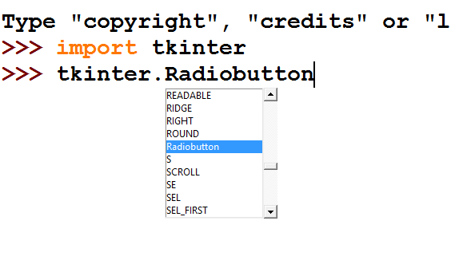
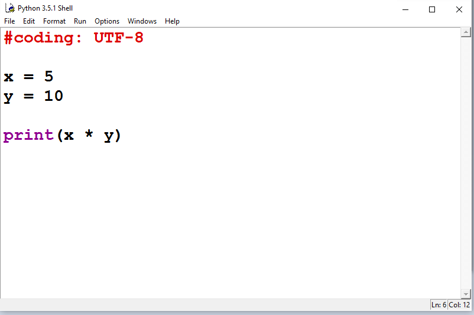
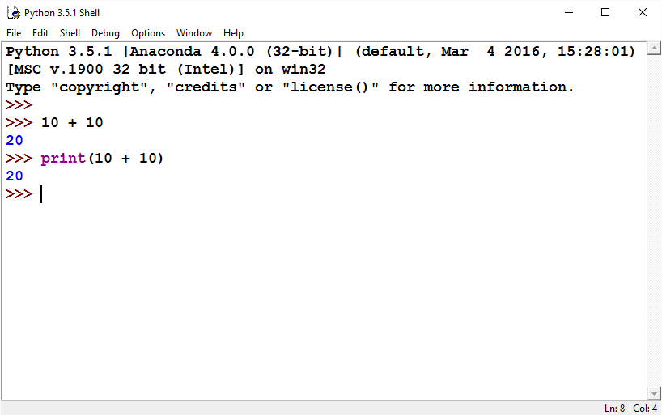
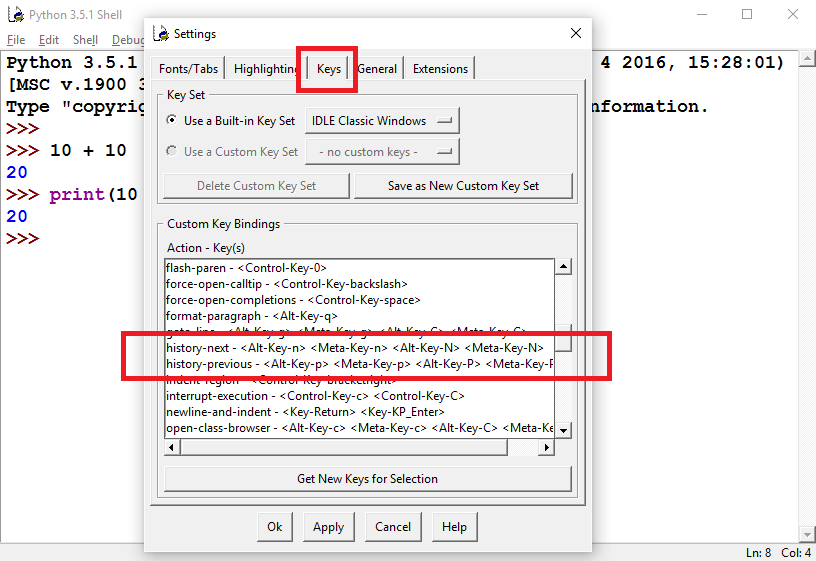
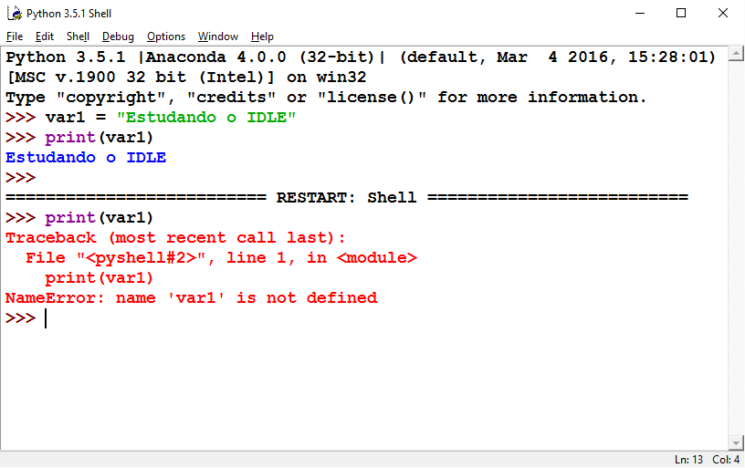
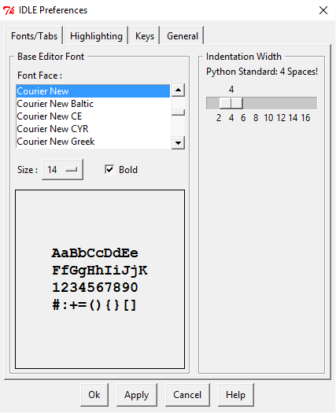
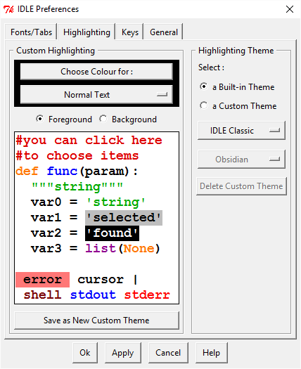
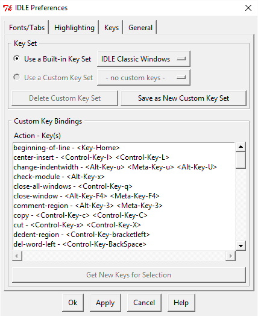
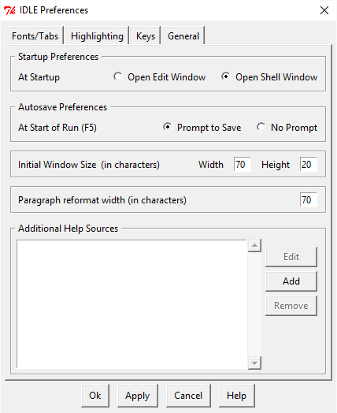

|
Nesta aula estudaremos o aplicativo IDLE que é, a forma interativa para utilizarmos o Python e assim, sermos capazes de testar funções, classes e quaisquer classe de qualquer pacote instalado. |
IDLE - VISÃO GERAL

O IDLE é um programa escrito em Python para ser utilizado como um ambiente de desenvolvimento integrado para execução de Script´s. A aplicação vem junto com a maioria das instalações do Python e está presente na distribuição oficial desde a versão 2.3.
O editor está construido 100% em Python, logo, toda a parte gráfica foi desenvolvida utilizando a biblioteca Tkinter.
De forma geral, podemos dizer que o objetivo do IDLE é proporcionar uma maneira rápida e fácil para o uso das funções e bibliotecas do Python, como também, proporcionar uma plataforma de estudo simples de ser utilizada, disponibilizando num único lugar, todos os recursos e bibliotecas do Python.
CODE COMPLETE
O IDLE vem evoluindo bastante nas últimas versões. Atualmente, o mesmo possui um code complete bastante inteligente, que exibe os parâmetros das função, ou então, todas as funções que podem ser invocadas por determinada classe ou objeto.
As teclas de atalho para chamar o CodeComplete são: Ctrl + Espaço. A forma como chamamos o CodeComplete do IDLE é igual a 99% das IDE´s.
EDITOR DE SCRIPTS
O IDLE também possui um editor de Script de várias linhas. Para utiliza-lo acesse o Menu File -> New File, ou então, pressione as teclas de atalho Ctrl + N. Em seguida, será aberta uma janela semelhante ao que temos abaixo.
Como podemos ver na imagem, nesta janela é possível criar scripts que contenham várias linhas e em seguida, executar todo o arquivo. Para executar o código, inicialmente, salve o Script e em seguida, vá no Menu Run -> Run Module, ou então, pressione a tecla de atalho F5. Feito isso, o Script será executado, caso não haja erros.
FUNCIONAMENTO BÁSICO DO IDLE
Para executar uma instrução no IDLE, basta digitarmos a mesma e pressionarmos a tecla Enter. Se a instrução enviada for válida, algo será impresso na tela ou então, nada acontecerá, salvo que o Cursor se posicionará numa nova linha.
Se por exemplo, executarmos a soma entre 2 números inteiros, o resultado será impresso na linha seguinte a operação, como podemos ver na imagem a seguir:
Como podemos ver na imagem, se mandarmos somar 2 números o resultado é impresso na linha seguinte. O mesmo resultado pode ser obtido, passando a soma como parâmetro pela função print().
#coding: utf-8
>>> 10 + 10
20
>>> print(10 + 10)
20
Após o resultado ser apresentado, o cursor é liberado para que seja possível entrar outra instrução.
RETORNANDO INSTRUÇÕES ANTERIORES
A maior crítica sobre a utilização do IDLE, sem dúvidas, está no fato das teclas de atalho para voltar a última instrução enviada. Normalmente, para retornarmos a última instrução no Prompt de Comando ou então, no Shell do Linux, utilizamos as setas para cima e para baixo. Porém, no IDLE, se utilizarmos as teclas para cima e para baixo, ocorrerá que iremos posicionar o cursor na direção pressionada.
Existe uma razão pela qual as teclas para cima e para baixo não foram utilizadas e também, rapidamente nos acostumamos com as teclas utilizadas por padrão pelo IDLE.
Alt + P - para voltar a última instrução digitada. A letra 'P' vem de "previous". Alt + N - para avançar. O 'N' vem de "Next".
Assim, temos a capacidade de avançar ou então retroceder nas instruções que digitamos.
Caso as teclas de atalho para avançar e retroceder as instruções lhe for incomodo, é possível alterá-las acessando o Menu do IDLE, para isso, vá em Option -> Configure IDLE -> Keys e então, defina a tecla de atalho a ação que desejares.
UTILIZANDO VÁRIAS SEÇÕES
Quando inicializamos o IDLE é aberta uma janela que contém um editor e é inicializado uma seção do Python. Tudo que for feito numa janela, estará disponível só e somente só na seção do Python inicializada especialmente para essa janela. Se o IDLE for reiniciado, ou então, se você estiver trabalhando com várias janelas abertas, cada uma terá uma seção independente do Python, onde poderás importar bibliotecas, definir variáveis ou então, poderás fazer o que bem entender. Assim, temos que uma variável declarada na "Janela A", não estará disponível na "Janela B", da mesma forma que, uma variável declaradas na execução do "Programa X", não estará disponível na execução do "Programa Y".
Muitas vezes, importamos diversas bibliotecas numa seção, ou então, alteramos algum funcionamento interno das bibliotecas do Python para estudarmos ou então, realizarmos testes.
Sempre que desejares, é possível reiniciar a seção em que estamos trabalhando e assim, remover quaisquer alterações feitas ou então, remover qualquer objeto criado em memória. Para isso, vá no Menu Shell -> Restart Shell ou então, pressione as teclas de atalho CTRL + F6. Em seguida, uma linha horizontal será traçada e será escrito no centro do vídeo RESTART, como pode ser visto na imagem abaixo:
Como a imagem acima esta mostrando, a variável que foi declarada antes da reinicialização do IDLE não está mais disponível, até porque, a seção que estava sendo utilizada foi destruida e em seguida, uma nova seção do Python foi inicializada.
TECLAS DE ATALHO DO IDLE
A seguir, temos as teclas de atalho que estudamos nessa aula e também, os atalhos que podem ser considerados os principais da utilização básica do IDLE.
- Alt + P -> retorna a última instrução
- Alt + N -> retorna a instrução seguinte
- Ctrl + F6 -> Reinicia o IDLE
- Ctrl + N -> Abre o editor de Script´s de várias linhas
PERSONALIZANDO O IDLE
Como vimos, o IDLE é construído só e somente só com a linguagem Python, e toda a parte gráfica está escrita utilizando a biblioteca nativa Tkinter. Porém, é possível personalizarmos o IDLE das mais diversas maneiras e inclusive, somos capazes de criar nossos próprios temas e até, distribuí-los.
Para personalizar o IDLE, vá no Menu Option -> Configure IDLE.... Em seguida, será aberta uma janela semelhante a que temos abaixo:
Como podemos ver na imagem acima, a primeira aba do menu de preferências do IDLE é Fonts/Tabs. Nesta, podemos escolher qual a fonte a ser utilizada pelo editor na lista contida dentro do GroupBox Base Editor Font. Abaixo da listagem de fontes disponíveis, há a opção Size, onde é possível definir o tamanho da fonte do editor e ao lado de Size, há um CheckBox de nome Bold que define se o texto deve ou não estar em Negrito.
A aba Highlighting do IDLE permite-nos definir o sistema de cor a ser utilizado. Inicialmente, observe a caixa ao lado direito da janela de nome Highlighting Theme. Nesta, podemos selecionar inicialmente se a alteração das cores será feita no tema que está sendo exibido no caso, a opção a Built-in Theme, ou então, podemos definir a opção a Custom Theme que habilitará os controles abaixo.
No primeiro Controle habilitado, há algumas opções de temas que estão instalados. Quando você seleciona outro tema, no mesmo momento, o editor ao lado esquerdo é alterado conforme as cores definidas no tema selecionado.
Agora, no GroupBox a esquerda de nome Custom Highlighting, temos a disposição todas as definições da linguagem Python. Logo, podemos alterar a cor de Background ou então, do Foreground de cada opção.
Se você for com o mouse em cima do Editor, poderás clicar em qual definição desejas alterar e assim, bastará selecionar a cor deseja.
A aba Keys já foi vista anteriormente, nesta, temos a definição de todas as teclas de atalho do IDLE e assim, podemos selecionar e em seguida, alterar a definição de tecla de atalho que desejamos.
A última aba é de nome General. Nesta, há opções configurações diversas. Inicialmente, temos o GroupBox Startup Preferences. Neste, podemos definir se ao abrirmos o IDLE o mesmo será aberto no mode Shell Window, isto é, o modo padrão, onde digitamos a instrução, pressionamos a tecla Enter e a mesma é executada.
Se definirmos a opção de abertura como sendo Open Edit Window, o IDLE será aberto com a tela de Edição de Scripts que estudamos anteriormente.
A opção a seguir é Autosave Preferences. Nesta, podemos definir se ao executarmos o Script na janela de Edição de Scripts será perguntado se desejamos salvar ou então, se o código será salvo automaticamente. É importante observar que inicialmente será perguntado onde desejamos salvar o arquivo de Script e somente em seguida, é que o salvamento será realizado automaticamente.
Em seguida temos a opção Initial Window Size (in character). Está opção permite-nos definir a largura e a altura do editor. É importante observar que as dimensões são calculadas pela quantidade de caracteres e não em pixels. Quando estudarmos a biblioteca Tkinter iremos entender o porque dessa especificação!
CONSIDERAÇÕES FINAIS
Nesse artigo estudamos o mínimo sobre o IDLE e aprendemos somente as teclas de atalho essenciais para que possamos utilizar o o ambiente para testes e estudos disponibilizado nas principais versões do Python, no caso, o IDLE!
É possível que seja feito muito mais do que o demonstrado e podemos explorar diversos outros recursos acessando o Menu do próprio editor.
Tags curso, python, idle, ide, editor, blog
Comentários
comments powered by Disqus